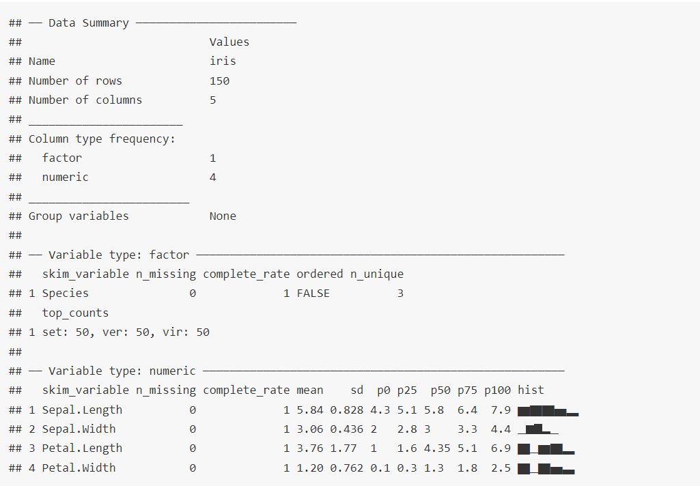

Chapter 15 Generating Descriptive statistics
Exploratory Data Analysis or often abbreviated as EDA, is mostly the first and foremost step before carrying out any data analytics task, is used to analyze and investigate data sets and summarize their main characteristics, often employing data visualization methods. EDA is primarily used to see what data can reveal beyond the formal modeling or hypothesis testing task and provides a provides a better understanding of data set variables and the relationships between them. It can also help determine if the statistical techniques you are considering for data analysis are appropriate. Originally developed by American mathematician John Tukey in the 1960s, EDA techniques continue to be a widely used method in the data discovery process today.
15.1 Using base R
Base R provides us with two functions used ato ascertain structure and summary statistics of a data frame. First is str short for structure (and not to be confused with string) which as its full name suggests gives us structure of the data. Its usage is simple
## 'data.frame': 150 obs. of 5 variables:
## $ Sepal.Length: num 5.1 4.9 4.7 4.6 5 5.4 4.6 5 4.4 4.9 ...
## $ Sepal.Width : num 3.5 3 3.2 3.1 3.6 3.9 3.4 3.4 2.9 3.1 ...
## $ Petal.Length: num 1.4 1.4 1.3 1.5 1.4 1.7 1.4 1.5 1.4 1.5 ...
## $ Petal.Width : num 0.2 0.2 0.2 0.2 0.2 0.4 0.3 0.2 0.2 0.1 ...
## $ Species : Factor w/ 3 levels "setosa","versicolor",..: 1 1 1 1 1 1 1 1 1 1 ...As can be seen it gives us number of variables (columns) as well as observations (rows) available in the given data. It thereafter presents us names of all the columns/variables in the data along with their types. That’s not all. It also prints few first values in all of the columns. For factor columns it also gives us available levels in those factor variables.
Another function from base R is summary which can be used to generate some summary statistics from the given data frame. Let’s see what we can get from this function.
## Sepal.Length Sepal.Width Petal.Length Petal.Width
## Min. :4.300 Min. :2.000 Min. :1.000 Min. :0.100
## 1st Qu.:5.100 1st Qu.:2.800 1st Qu.:1.600 1st Qu.:0.300
## Median :5.800 Median :3.000 Median :4.350 Median :1.300
## Mean :5.843 Mean :3.057 Mean :3.758 Mean :1.199
## 3rd Qu.:6.400 3rd Qu.:3.300 3rd Qu.:5.100 3rd Qu.:1.800
## Max. :7.900 Max. :4.400 Max. :6.900 Max. :2.500
## Species
## setosa :50
## versicolor:50
## virginica :50
##
##
## We can see that it nicely gives us five-point summary for all numeric variables and count of all values present in factor variables. Apart from the five point summary i.e. (1) minimum, (2) 1st quartile, (3) Median, (4) third quartile and (5) maximum; we also get mean (arithmetic) of all numeric variables.
Before moving forward, we can discuss again table() function here which is used to genrate counts of factor/character variable(s) in base R.
## Species
## setosa versicolor virginica
## 50 50 5015.2 Dplyr functions
For calculating other statistics we can use dplyr::summarise in combination with across. For Example to calculate mean, sd, variance for all numeric variables of say iris data, we can do-
library(dplyr)
iris %>%
summarise(across(where(is.numeric),
.fns = list(
Mean = ~ mean(.),
SD = ~ sd(.),
Var = ~ var(.)
)))## Sepal.Length_Mean Sepal.Length_SD Sepal.Length_Var Sepal.Width_Mean
## 1 5.843333 0.8280661 0.6856935 3.057333
## Sepal.Width_SD Sepal.Width_Var Petal.Length_Mean Petal.Length_SD
## 1 0.4358663 0.1899794 3.758 1.765298
## Petal.Length_Var Petal.Width_Mean Petal.Width_SD Petal.Width_Var
## 1 3.116278 1.199333 0.7622377 0.5810063Before trying to understand the output let’s learn to use dplyr::across. Actually across is used inside dplyr verbs mostly with mutate or summarise through which we can mutate/summarise multiple variables (columns) simultaneously. So, at least two arguments are needed; first variable names which can be provided through a type checking variable, str detecting function, etc.; and second argument either a function name or a list of functions together. So in above example we have summarised all numeric columns (see first argument is a function is.numeric which only operates on column names) and second argument is a list of three functions in lambda style notation. In our example we are having 4 numeric columns and three aggregating functions, so 12 columns we are getting in output.
We can further reshape/transform the data using tidyr::pivot_longer. See
library(tidyr)
iris %>%
summarise(across(where(is.numeric),
.fns = list(
Mean = ~ mean(.),
SD = ~ sd(.),
Var = ~ var(.)
))) %>%
pivot_longer(everything(),
names_sep = "_",
names_to = c(".value", "Function"))## # A tibble: 3 × 5
## Function Sepal.Length Sepal.Width Petal.Length Petal.Width
## <chr> <dbl> <dbl> <dbl> <dbl>
## 1 Mean 5.84 3.06 3.76 1.20
## 2 SD 0.828 0.436 1.77 0.762
## 3 Var 0.686 0.190 3.12 0.581iris %>%
summarise(across(where(is.numeric),
.fns = list(
Mean = ~ mean(.),
SD = ~ sd(.),
Var = ~ var(.)
))) %>%
pivot_longer(everything(),
names_sep = "_",
names_to = c("Variable", ".value"))## # A tibble: 4 × 4
## Variable Mean SD Var
## <chr> <dbl> <dbl> <dbl>
## 1 Sepal.Length 5.84 0.828 0.686
## 2 Sepal.Width 3.06 0.436 0.190
## 3 Petal.Length 3.76 1.77 3.12
## 4 Petal.Width 1.20 0.762 0.581Let us also discuss one more data summary statistics function of dplyr that is glimpse. It is basically a pipe friendly version of str(). See
## Rows: 150
## Columns: 5
## $ Sepal.Length <dbl> 5.1, 4.9, 4.7, 4.6, 5.0, 5.4, 4.6, 5.0, 4.4, 4.9, 5.4, 4.…
## $ Sepal.Width <dbl> 3.5, 3.0, 3.2, 3.1, 3.6, 3.9, 3.4, 3.4, 2.9, 3.1, 3.7, 3.…
## $ Petal.Length <dbl> 1.4, 1.4, 1.3, 1.5, 1.4, 1.7, 1.4, 1.5, 1.4, 1.5, 1.5, 1.…
## $ Petal.Width <dbl> 0.2, 0.2, 0.2, 0.2, 0.2, 0.4, 0.3, 0.2, 0.2, 0.1, 0.2, 0.…
## $ Species <fct> setosa, setosa, setosa, setosa, setosa, setosa, setosa, s…To calculate counts of factor variable (as generated by table in base R), we can use dplyr::count a pipe friendly function.
## Species n
## 1 setosa 50
## 2 versicolor 50
## 3 virginica 50We can generate counts of multiple combinations of variables
## # A tibble: 35 × 3
## cut color count
## <ord> <ord> <int>
## 1 Fair D 163
## 2 Fair E 224
## 3 Fair F 312
## 4 Fair G 314
## 5 Fair H 303
## 6 Fair I 175
## 7 Fair J 119
## 8 Good D 662
## 9 Good E 933
## 10 Good F 909
## # ℹ 25 more rows15.3 Using psych
There are indeed some beautiful packages in R, which creates beautiful EDA summaries for us without much ado. Package psych is one of these.
##
## Attaching package: 'psych'## The following objects are masked from 'package:ggplot2':
##
## %+%, alpha## vars n mean sd median trimmed mad min max range skew
## Murder 1 50 7.79 4.36 7.25 7.53 5.41 0.8 17.4 16.6 0.37
## Assault 2 50 170.76 83.34 159.00 168.48 110.45 45.0 337.0 292.0 0.22
## UrbanPop 3 50 65.54 14.47 66.00 65.88 17.79 32.0 91.0 59.0 -0.21
## Rape 4 50 21.23 9.37 20.10 20.36 8.60 7.3 46.0 38.7 0.75
## kurtosis se
## Murder -0.95 0.62
## Assault -1.15 11.79
## UrbanPop -0.87 2.05
## Rape 0.08 1.32Note that output is in data.frame format ready to use. Another function in psych is describeBy which creates grouped summaries.
##
## Descriptive statistics by group
## cut: 1
## vars n mean sd median trimmed mad min max
## carat 1 1610 1.05 0.52 1.00 0.98 0.43 0.22 5.01
## cut 2 1610 1.00 0.00 1.00 1.00 0.00 1.00 1.00
## color 3 1610 3.85 1.71 4.00 3.85 1.48 1.00 7.00
## clarity 4 1610 3.02 1.45 3.00 2.93 1.48 1.00 8.00
## depth 5 1610 64.04 3.64 65.00 64.48 1.33 43.00 79.00
## table 6 1610 59.05 3.95 58.00 58.64 2.97 49.00 95.00
## price 7 1610 4358.76 3560.39 3282.00 3695.65 2183.13 337.00 18574.00
## x 8 1610 6.25 0.96 6.18 6.21 0.81 0.00 10.74
## y 9 1610 6.18 0.96 6.10 6.14 0.79 0.00 10.54
## z 10 1610 3.98 0.65 3.97 3.95 0.52 0.00 6.98
## range skew kurtosis se
## carat 4.79 1.68 5.31 0.01
## cut 0.00 NaN NaN 0.00
## color 6.00 0.06 -0.86 0.04
## clarity 7.00 0.68 0.14 0.04
## depth 36.00 -1.17 2.20 0.09
## table 46.00 1.34 4.83 0.10
## price 18237.00 1.78 3.07 88.73
## x 10.74 0.36 1.58 0.02
## y 10.54 0.36 1.53 0.02
## z 6.98 0.34 1.43 0.02
## ------------------------------------------------------------
## cut: 2
## vars n mean sd median trimmed mad min max
## carat 1 4906 0.85 0.45 0.82 0.80 0.43 0.23 3.01
## cut 2 4906 2.00 0.00 2.00 2.00 0.00 2.00 2.00
## color 3 4906 3.57 1.76 3.00 3.51 1.48 1.00 7.00
## clarity 4 4906 3.60 1.47 3.00 3.44 1.48 1.00 8.00
## depth 5 4906 62.37 2.17 63.40 62.70 0.74 54.30 67.00
## table 6 4906 58.69 2.85 58.00 58.57 2.97 51.00 66.00
## price 7 4906 3928.86 3681.59 3050.50 3251.51 2853.26 327.00 18788.00
## x 8 4906 5.84 1.06 5.98 5.80 1.10 0.00 9.44
## y 9 4906 5.85 1.05 5.99 5.82 1.08 0.00 9.38
## z 10 4906 3.64 0.65 3.70 3.62 0.68 0.00 5.79
## range skew kurtosis se
## carat 2.78 1.03 1.22 0.01
## cut 0.00 NaN NaN 0.00
## color 6.00 0.25 -0.93 0.03
## clarity 7.00 0.81 0.29 0.02
## depth 12.70 -1.20 0.17 0.03
## table 15.00 0.31 -0.64 0.04
## price 18461.00 1.72 3.04 52.56
## x 9.44 0.15 -0.15 0.02
## y 9.38 0.14 -0.17 0.02
## z 5.79 0.09 0.12 0.01
## ------------------------------------------------------------
## cut: 3
## vars n mean sd median trimmed mad min max
## carat 1 12082 0.81 0.46 0.71 0.75 0.46 0.2 4.00
## cut 2 12082 3.00 0.00 3.00 3.00 0.00 3.0 3.00
## color 3 12082 3.57 1.72 3.00 3.51 1.48 1.0 7.00
## clarity 4 12082 4.00 1.59 4.00 3.87 1.48 1.0 8.00
## depth 5 12082 61.82 1.38 62.10 61.95 1.48 56.8 64.90
## table 6 12082 57.96 2.12 58.00 57.88 1.48 44.0 66.00
## price 7 12082 3981.76 3935.86 2648.00 3243.22 2855.49 336.0 18818.00
## x 8 12082 5.74 1.10 5.74 5.69 1.25 0.0 10.01
## y 9 12082 5.77 1.10 5.77 5.72 1.25 0.0 9.94
## z 10 12082 3.56 0.73 3.56 3.53 0.76 0.0 31.80
## range skew kurtosis se
## carat 3.80 0.99 0.89 0.00
## cut 0.00 NaN NaN 0.00
## color 6.00 0.25 -0.89 0.02
## clarity 7.00 0.57 -0.43 0.01
## depth 8.10 -0.71 -0.30 0.01
## table 22.00 0.28 0.04 0.02
## price 18482.00 1.60 2.24 35.81
## x 10.01 0.23 -0.65 0.01
## y 9.94 0.23 -0.66 0.01
## z 31.80 4.96 183.94 0.01
## ------------------------------------------------------------
## cut: 4
## vars n mean sd median trimmed mad min max
## carat 1 13791 0.89 0.52 0.86 0.83 0.56 0.2 4.01
## cut 2 13791 4.00 0.00 4.00 4.00 0.00 4.0 4.00
## color 3 13791 3.70 1.71 4.00 3.67 1.48 1.0 7.00
## clarity 4 13791 3.74 1.50 4.00 3.60 1.48 1.0 8.00
## depth 5 13791 61.26 1.16 61.40 61.36 1.19 58.0 63.00
## table 6 13791 58.75 1.48 59.00 58.77 1.48 51.0 62.00
## price 7 13791 4584.26 4349.20 3185.00 3822.23 3371.43 326.0 18823.00
## x 8 13791 5.97 1.19 6.11 5.92 1.42 0.0 10.14
## y 9 13791 5.94 1.26 6.06 5.89 1.41 0.0 58.90
## z 10 13791 3.65 0.73 3.72 3.62 0.86 0.0 8.06
## range skew kurtosis se
## carat 3.81 0.86 0.43 0.00
## cut 0.00 NaN NaN 0.00
## color 6.00 0.12 -0.88 0.01
## clarity 7.00 0.69 0.06 0.01
## depth 5.00 -0.61 -0.37 0.01
## table 11.00 -0.37 1.33 0.01
## price 18497.00 1.33 1.07 37.03
## x 10.14 0.17 -0.85 0.01
## y 58.90 5.53 225.05 0.01
## z 8.06 0.11 -0.44 0.01
## ------------------------------------------------------------
## cut: 5
## vars n mean sd median trimmed mad min max
## carat 1 21551 0.70 0.43 0.54 0.64 0.33 0.2 3.50
## cut 2 21551 5.00 0.00 5.00 5.00 0.00 5.0 5.00
## color 3 21551 3.53 1.66 4.00 3.48 1.48 1.0 7.00
## clarity 4 21551 4.46 1.71 4.00 4.39 1.48 1.0 8.00
## depth 5 21551 61.71 0.72 61.80 61.76 0.59 43.0 66.70
## table 6 21551 55.95 1.25 56.00 55.97 1.48 43.0 63.00
## price 7 21551 3457.54 3808.40 1810.00 2656.14 1630.86 326.0 18806.00
## x 8 21551 5.51 1.06 5.25 5.41 1.19 0.0 9.65
## y 9 21551 5.52 1.07 5.26 5.42 1.19 0.0 31.80
## z 10 21551 3.40 0.66 3.23 3.34 0.73 0.0 6.03
## range skew kurtosis se
## carat 3.30 1.34 1.63 0.00
## cut 0.00 NaN NaN 0.00
## color 6.00 0.19 -0.82 0.01
## clarity 7.00 0.36 -0.71 0.01
## depth 23.70 -1.44 22.33 0.00
## table 20.00 0.20 1.70 0.01
## price 18480.00 1.84 2.98 25.94
## x 9.65 0.66 -0.42 0.01
## y 31.80 1.30 15.99 0.01
## z 6.03 0.65 -0.36 0.00There is one more function describeData is this package which also results in first as well as last four (default) values.
## n.obs = 53940 of which 53940 are complete cases. Number of variables = 10 of which all are numeric TRUE
## variable # n.obs type H1 H2 H3 H4 T1 T2
## carat* 1 53940 4 0.23 0.21 0.23 0.29 0.72 0.70
## cut* 2 53940 4 Ideal Premium Good Premium Good Very Good
## color* 3 53940 4 E E E I D D
## clarity* 4 53940 4 SI2 SI1 VS1 VS2 SI1 SI1
## depth* 5 53940 4 61.5 59.8 56.9 62.4 63.1 62.8
## table* 6 53940 4 55 61 65 58 55 60
## price* 7 53940 4 326 326 327 334 2757 2757
## x* 8 53940 4 3.95 3.89 4.05 4.20 5.69 5.66
## y* 9 53940 4 3.98 3.84 4.07 4.23 5.75 5.68
## z* 10 53940 4 2.43 2.31 2.31 2.63 3.61 3.56
## T3 T4
## carat* 0.86 0.75
## cut* Premium Ideal
## color* H D
## clarity* SI2 SI2
## depth* 61.0 62.2
## table* 58 55
## price* 2757 2757
## x* 6.15 5.83
## y* 6.12 5.87
## z* 3.74 3.6415.4 Using skimr
Package skimr generates beautiful data EDA summary reports which can be customised as per one’s taste. Full descriptions of this package may be seen here. For basic purposes we can use function skim from this package to get data EDA summary reports.
library(skimr)
skim(iris)
15.5 Viewing relationships between different variables
We can use package PerformanceAnalytics to generate and view relationships between different variables in the data. For this purpose function PerformanceAnalytics::chart.Correlation() may be used as shown below.
suppressMessages(library(PerformanceAnalytics))
USArrests %>%
select(where(is.numeric)) %>%
PerformanceAnalytics::chart.Correlation()
Figure 15.1: Viewing relationships with PerformanceAnalytics
As can be seen that it generates visualization of a Correlation Matrix of the numeric variables in the given data.
There is one more package GGally which also creates beautiful charts for viewing relationships. There are two functions in this package which are particularly useful.
The
ggpairs()function of the GGally package allows to build a great scatterplot matrix. Scatterplots of each pair of numeric variable are drawn on the left part of the figure. Pearson correlation is displayed on the right. Variable distribution is available on the diagonal.The
ggcorr()function allows to visualize the correlation of each pair of variable as a square. Note that the method argument allows to pick the correlation type you desire.
See the following example-
suppressMessages(library(GGally))
USArrests %>%
select_if(is.numeric) %>%
ggcorr(label = TRUE)
USArrests %>%
select_if(is.numeric) %>%
ggpairs()Figure 15.2: Scatterplot Matrix (Left) and Correlation plot (Right) produced in GGally